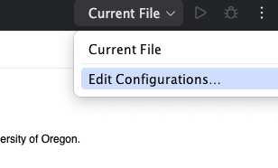
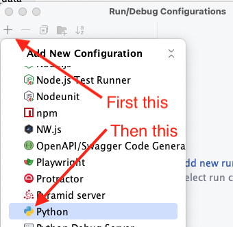

Running Python code in an IDE or at the command line#
I presume you’ve already run Python programs either from the command line or from the basic IDLE interactive development environment (IDE). When we needed to specify an input file or other options to our running program, we supplied the necessary information on the command line, something like
$ python3
my_program.py - pleasedontcrash
my_input.csv
The exact syntax, including the prompt ($ in my example above), the
name of the Python interpreter (python3 in my example), and the way
options are identified (with a leading - in my example) can depend on
your operating system and configuration.
While we are developing a program, we need to run our code or a test script that exercises our code again and again to check progress and catch new bugs as quickly as possible. If we have to type out the entire command line each time we run it, we will be discouraged from running the many incremental tests that are crucial for efficient development. We’ll be tempted to write or edit too much new code between test runs, which sooner or later will leave us with a difficult debugging task that could have been avoided.
Interactive development environments (IDEs) like PyCharm and VS Code provide ways of running a program by pressing a button. The default “run the code you’re editing” action is sufficient if you don’t need extra arguments on the command line. When you do need extra arguments or other adjustments to run your tests, these IDEs can be configured to automatically provide those arguments and adjustments. They do so by building a command line internally, and then executing it just as you would in a terminal window.
Let’s look first at the parts of a command line, then at how to configure PyCharm or VS Code to build and execute the command line we need when we push a “run” button.
Python from the command line#
When we run a Python program, we are actually running another program, the Python interpreter, which translates our Python code into an internal byte code representation of instructions for an imaginary Python computer (a virtual machine), then simulates execution of that imaginary computer. (We’ll build our own simulator for a simpler virtual machine in the Duck Machine project.)
Because we’re really running the Python interpreter, there are actually two sets of command line arguments: Arguments for the Python interpreter, and arguments for our Python program.
> python3 -pyarg1 program.py -our_arg1 input.txt
I the example above, -pyarg1 is an argument to the Python
interpreter (which in the example is python3 but might be py or
python depending on how Python is installed on your operating system).
-our_arg1, which appears after the file name of our Python program,
is an argument to our Python program program.py. program.py is
actually the input file for python3, and input.txt is the input file
for program.py.
When we configure PyCharm or VS Code to run test cases, there will be a
place to specify each of these. In PyCharm we’ll place them in slots in
a form. In VS Code we’ll code them textually in a json format file,
launch.json.
Configuring the run button in PyCharm#
In PyCharm we create a configuration using the edit configurations menu selection

then add a new configuration for running a Python program. PyCharm will offer several other options, including some specialized for testing. You might find some of these useful later, but for now we want a straightforward “Python” configuration whether we are running our Python program or a test program for exercising our code.


The “name” field is how the run configuration will be identified in PyCharm’s title bar (in place of “run current file”). The “script path” is where it should find the Python source code we want to run. The “ Parameters” field is for command line arguments to your Python program, with a separate “interpreter” option for arguments to the Python interpreter itself. There are additional settings you can alter, but these should be enough for now.
If we add a -v option for a test program that uses the unittest
framework, as our test_appt.py program does,
we can see a list of the passing and failing
test cases before details of the (many) errors:
/usr/local/bin/python3.8 /Users/michal/Dropbox/20W-211/projects/dist/agenda/test_appt.py -v
test_00_equality (__main__.TestAppt) ... ok
test_01_order (__main__.TestAppt) ... ok
test_02_overlap (__main__.TestAppt) ... ERROR
test_03_intersect (__main__.TestAppt) ... ERROR
Why was this necessary?#
You might be wondering why the configurations for running the project from PyCharm or VS Code were not provided in the project repository. The project repository is where we keep artifacts that are the same for everyone who will work on that project. Configurations are specific to the environment in which you will run your code, which includes at least your operating system and, in many cases, also the location of the project in your file system.
In a research or professional development environment, each
developer on the development team might have their own unique
configuration files, and the team might in addition have multiple
configurations for test servers and the production environment,
whether that be on a server “in the cloud” or on a client’s
dedicated computers. These configurations might be maintained in
their own repositories and combined with project repositories in an
automated build process. The tools and processes to manage such a
build process are overkill for a beginning course in computer science.
You are likely to encounter them later in an internship, project
course, or research project.